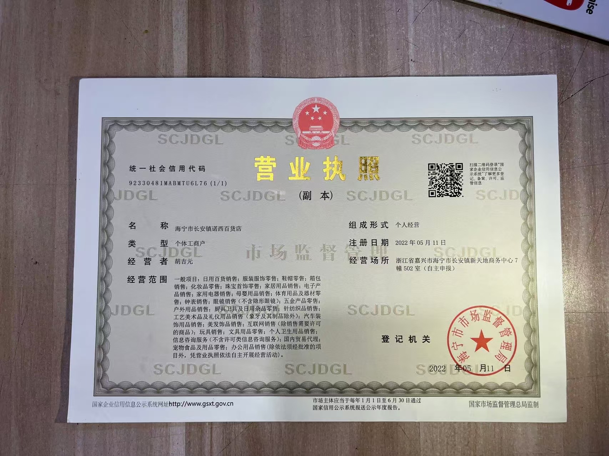

Yiwu market access
Local sourcing around Yiwu International Trade City and nearby supply hubs for low-MOQ and mixed-category buying.
Yiwu sourcing agent for global buyers
One team for supplier search, price negotiation, quality control, warehouse consolidation, and international shipping.
Built around the Yiwu market
YiwuBridge gives importers, retailers, wholesalers, and e-commerce sellers a local team that can move from product discovery to shipment without losing control of cost, quality, or timing.
Product categories
From small commodities to private-label collections, we match your target price, quality level, packaging, and compliance requirements.
Send us your product photos, links, or specs. A sourcing specialist will reply with the next step.
More than an online marketplace
Your Yiwu team checks suppliers offline, negotiates details in Chinese, handles samples, inspects goods, and consolidates mixed orders before export.
About Us
YiwuBridge is built for overseas buyers who need a practical local team in Yiwu, not only online supplier links. We support supplier search, quotation comparison, samples, quality checks, warehouse consolidation, private-label packing, and export shipping coordination.
Local sourcing around Yiwu International Trade City and nearby supply hubs for low-MOQ and mixed-category buying.
Reserved for your real Yiwu office, sourcing specialist, or buyer reception photos.
Reserved for actual warehouse packing, carton labeling, quality inspection, and shipment photos.

Nuoxi Department Store, Chang'an Town. Unified Social Credit Code: 92330481MABMTU6L76.
Value-added support
Buyer solutions
Different buyers need different controls. We separate the workflow for Amazon sellers, wholesalers, retail chains, and first-time test orders so your inquiry goes to the right sourcing process.
Supplier matching, SKU labels, carton marks, barcode checks, product photos, and direct shipment to fulfillment centers.
Combine goods from several Yiwu and 1688 suppliers, reduce repeated freight costs, and simplify customs documents.
Track supplier lead times, packaging consistency, quantity checks, and replenishment planning for repeat purchase programs.
Start with market-ready stock, then add stickers, inserts, hang tags, color boxes, and product photos as the order grows.
How it works
A simple workflow for overseas buyers who need a local Yiwu agent to source, verify, inspect, consolidate, and ship products from China.
Share links, images, or specs of items from Yiwugo, 1688, Alibaba, or your target market.
We check the offline Yiwu market, compare supplier options, and quote you within 24 hours.
We collect samples, inspect quality, confirm packaging, and send you photos or videos.
We pack your mixed items into one shipment and coordinate export documents, customs, and delivery.
Representative sourcing cases
Practical project examples based on common buyer workflows. They show what evidence, controls, and export preparation an overseas buyer should expect before approving shipment.
Case 01 | Market sourcing
The buyer sent reference photos for home organizers, kitchen tools, and daily-use items. We checked Yiwu market booths, compared MOQs, and prepared a supplier shortlist with real product photos.

Case 02 | Warehouse packing
A wholesaler ordered from several Yiwugo and 1688 suppliers. We received the cartons in Yiwu, checked carton marks, photographed the goods, repacked weak boxes, and combined everything into one shipment.

Case 03 | E-commerce prep
For an online seller, we coordinated custom labels, thank-you cards, barcode stickers, carton marks, and final packing photos so the order could move directly to an overseas warehouse or Amazon FBA.

Case 04 | Quality control
For a repeat buyer, we checked packaging, carton count, visible defects, color consistency, and product details before the remaining payment was released to the supplier.

Case 05 | Private label
A small brand needed low-MOQ items to look consistent at retail. We coordinated stickers, inserts, package checks, and pre-shipment photos before the first launch order.
Trust and risk control
Large buyers need evidence, not only promises. These controls reduce supplier risk, unclear charges, wrong packaging, and shipment surprises.
We compare supplier options, MOQ, lead time, packaging, and RMB price notes so you can see why a supplier is recommended.
If visible defects or wrong packaging are found, we document the issue and request supplier correction, replacement, or rework before export.
We provide sample photos, carton photos, label photos, package checks, and short videos where needed before final release.
Support for T/T, local USD/EUR/GBP transfers via compliant providers, Alibaba Trade Assurance, and PayPal for small samples.
Legal disclaimer
This website is operated by an independent Yiwu purchasing service provider under the brand YiwuBridge. We have no official partnership, authorization, investment, or affiliation with Yiwugo.com and its operator Zhejiang Yiwugo E-Commerce Co., Ltd. The term "YIWUGO" is the registered trademark of its respective owner. Any mention of Yiwugo on this site is only a reference to a third-party marketplace and does not imply endorsement, agency relationship, or brand authorization. All services provided by us are independent third-party sourcing services.
Start sourcing
Share your product category, target market, budget, and timeline. We will prepare a practical sourcing plan.
Yiwu office location
Office address: No. 2, Building 22, Xingzhong Community, Chouzhou North Road, Choucheng Street, Yiwu City, Jinhua City, Zhejiang Province, China.
Quick answer for buyers
YiwuBridge is a Yiwu-based China sourcing agent for importers, wholesalers, Amazon FBA sellers, Shopify sellers, and retail buyers who need help turning a product idea, Yiwugo link, 1688 link, PDF RFQ, or sample photo into verified supplier options and a shippable order.
Supplier search, quotation comparison, sample checking, QC inspection, warehouse consolidation, FBA prep, and export shipping coordination.
Small businesses testing low MOQs, wholesalers sourcing mixed categories, and established buyers needing local verification before payment.
Send product name, target price, expected quantity, destination country, product links, images, or a PDF RFQ list. Attachments can be sent by email after the form.
Yiwu sourcing guide
YiwuBridge supports importers, Amazon sellers, wholesalers, retail chains, and promotional gift buyers who need a local China buying agent for Yiwu International Trade City and nearby supply hubs.
We shortlist market shops, factories, and trading companies, compare quotations, confirm MOQ, and help you avoid unclear supplier information before you pay.
For mixed-category orders, we can receive goods from different suppliers, check quantity, take photos, relabel cartons, and consolidate shipment.
We coordinate with freight forwarders for express, air, sea, rail, or mixed shipping plans based on product type, volume, urgency, and budget.
Latest sourcing guides
These guides answer the questions importers search before choosing a Yiwu sourcing agent: Alibaba vs 1688, Amazon FBA prep, private-label packaging, shipping cost, agent fees, and supplier verification.
View all Blog / Sourcing Guide articlesChina importing
Choose the right partner for sourcing, QC, Taobao samples, 1688 wholesale buying, consolidation, and shipping.
Cost comparison
Compare platform price, MOQ, supplier risk, QC, consolidation, and shipping responsibility.
Amazon FBA
Prepare SKU labels, carton marks, QC evidence, and consolidated shipping before goods reach Amazon.
Private label
Use stickers, hang tags, inserts, cartons, and product photos to make low-MOQ goods retail-ready.
Warehouse consolidation
Combine multiple suppliers, reduce wasted CBM, and simplify customs with one Yiwu warehouse.
Buyer resources
Reserve this area for downloadable PDFs such as a Yiwu Buying Checklist, Amazon FBA Prep Standard, or Supplier Audit Questions. When your PDF is ready, this module can collect buyer emails before download.
FAQ
Learn how YiwuBridge supports global buyers who need a local China buying agent for supplier search, product sourcing, inspection, warehouse consolidation, and international shipping.
A Yiwu sourcing agent helps you find suppliers, compare quotations, negotiate details, check samples, inspect goods, consolidate orders, and arrange export shipping from China.
Yes. We can receive goods from multiple suppliers, check quantities, relabel or repack products, and consolidate them into one export shipment.
We source kitchenware, household goods, fashion accessories, toys, stationery, tools, lighting, packaging, home decor, baby products, pet supplies, seasonal gifts, and custom products.
We offer free sourcing and quotation. We only charge a 3% - 5% service fee based on your total order value when the shipment is confirmed. No hidden costs.
To ensure transactional security and minimize costs for our clients, we support Standard International Wire Transfers (T/T), Local Bank Transfers (USD/EUR/GBP via XTransfer/WorldFirst), and Alibaba Trade Assurance. For small sample payments under $500, PayPal is also accepted.
Yes! We are highly experienced with Amazon FBA standards. We provide free carton labeling, SKU barcoding, and direct pallet or parcel shipping to global fulfillment centers.
Yes. Send product photos, Yiwugo links, 1688 links, Alibaba links, specs, target price, quantity, destination country, and deadline. We will check supplier options and prepare a practical quotation.
Yes. Submit the RFQ form first, then email images, drawings, PDF lists, or specification files to hujiyuan0721@gmail.com. Include your name or WhatsApp number so we can match the files with your inquiry.
The footer lists the registered business information: Nuoxi Department Store, Chang'an Town, Unified Social Credit Code 92330481MABMTU6L76.